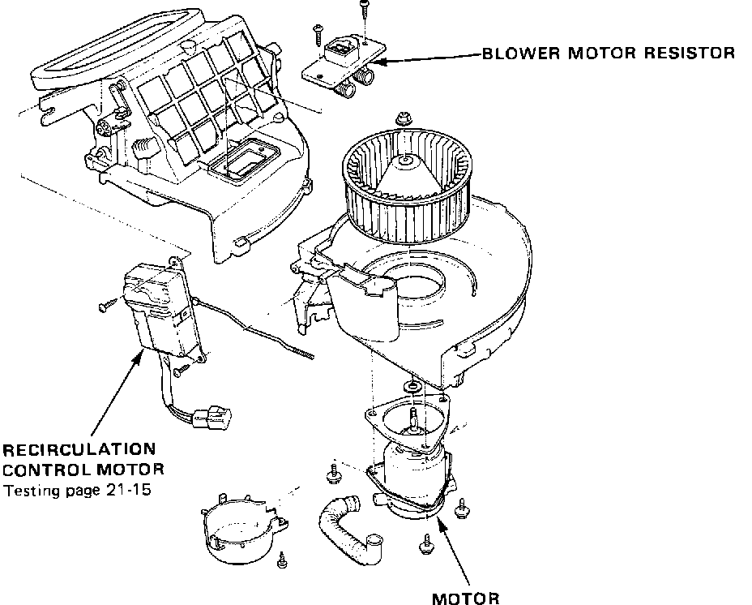
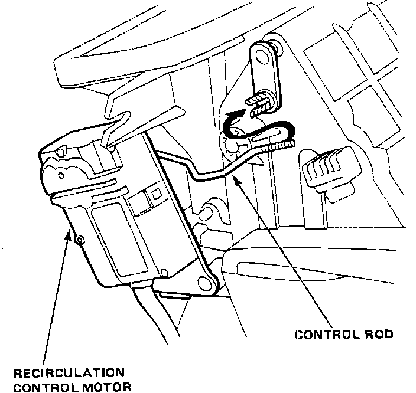

Overhaul
Blower Overhaul:

1. Disassemble and reassemble as described on image.
2. Before reassembly, ensure that air door and linkage move smoothly without binding.
3. When reattaching recirculation control motor, ensure its positioning will not allow air door to be pulled too far.
4. Attach linkage. Apply battery voltage and observe door movement. If necessary, loosen mounting screws and move motor up or down.
Control Rod Adjustment:

5. To adjust control rod, plug motor into main wire harness and turn FRE/REC switch to REC and open air door.
6. Connect control rod to arm while holding air door open.